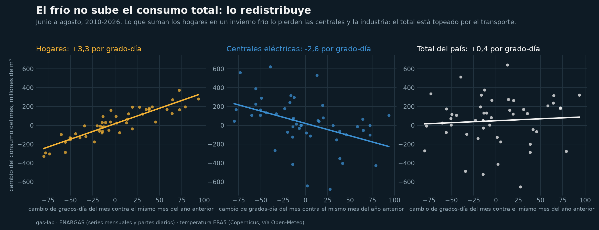
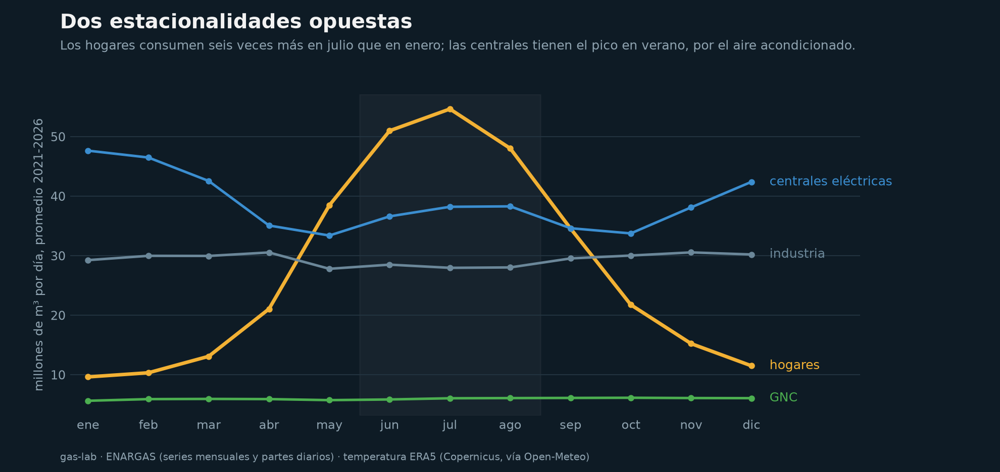
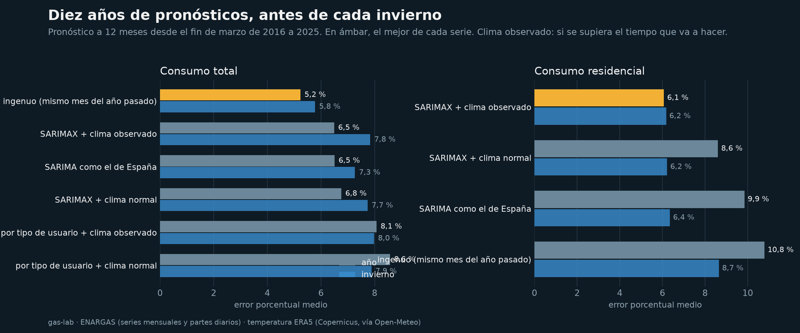
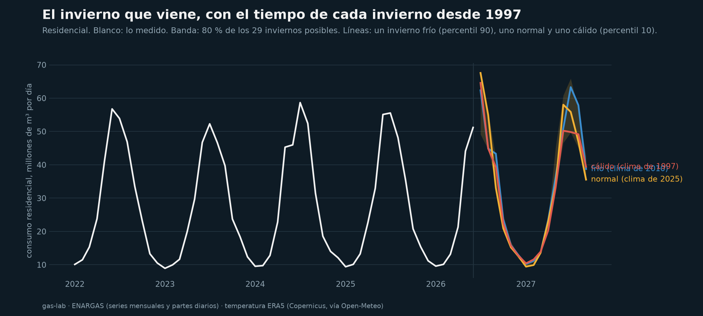
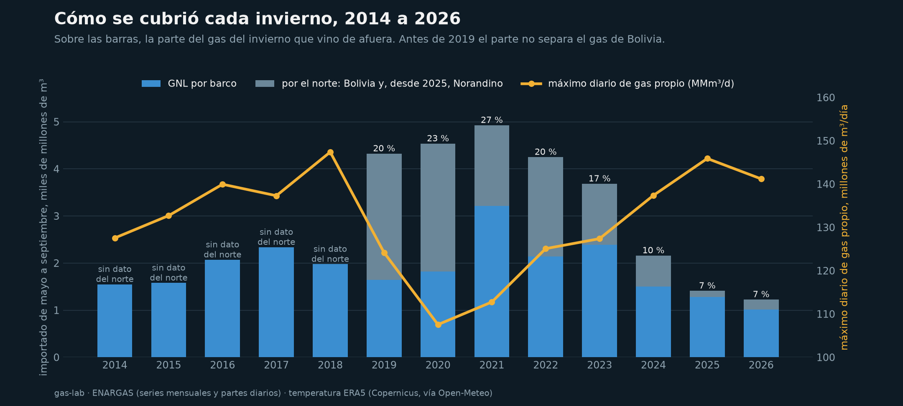
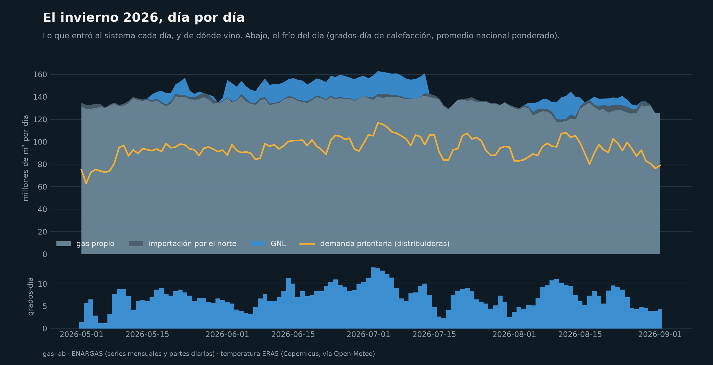
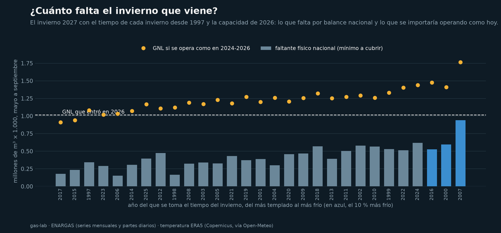

¿Alcanza el gas?
La demanda de gas de la Argentina, el frío y el pico del invierno. Treinta años de consumo mensual del ENARGAS, más de 4.600 partes diarios desde 2014 y la temperatura diaria de diez ciudades.
+3,3 / −2,6millones de m³ por grado-día en invierno: lo que suman los hogares y lo que pierden las centrales
5,2 %error del pronóstico más simple del total, igual al SARIMA del trabajo sobre España
27 % → 7 %la parte del gas de invierno que vino de afuera, de 2021 a 2026
141millones de m³ por día: el techo de gas propio del invierno 2026
El frío no sube el total: lo redistribuye


Diez años de pronósticos

En el total gana repetir el mismo mes del año anterior. En los hogares, la temperatura baja el error a la mitad si se sabe qué tiempo va a hacer.

Cómo se cubrió cada invierno


El invierno que viene

| Invierno 2027 con el clima de… | Días con faltante | Faltante físico, millones de m³ | GNL operando como 2024-2026 |
|---|---|---|---|
| un invierno cálido (p10) | 44 | 222 | 1.031 |
| uno normal (mediana) | 57 | 395 | 1.231 |
| uno frío (p90) | 72 | 584 | 1.417 |
El faltante físico es el balance nacional contra el techo de gas propio de 2026, el mínimo a cubrir. El GNL que se usa es más: entra por Escobar, al lado del AMBA, y cubre un cuello regional; además se contrata antes del invierno. Todo supone la capacidad de transporte de 2026.
Cómo
- Consumo mensual por tipo de usuario y distribuidora del ENARGAS desde 1996, por la API de series del Estado.
- Partes diarios del ENARGAS desde 2014: consumo por distribuidora, inyección total, GNL e importación por el norte.
- Temperatura diaria del reanálisis ERA5 en una ciudad por distribuidora, convertida en grados-día de calefacción.
- Código, tests y notebooks: github.com/dpinero14/gas-lab.